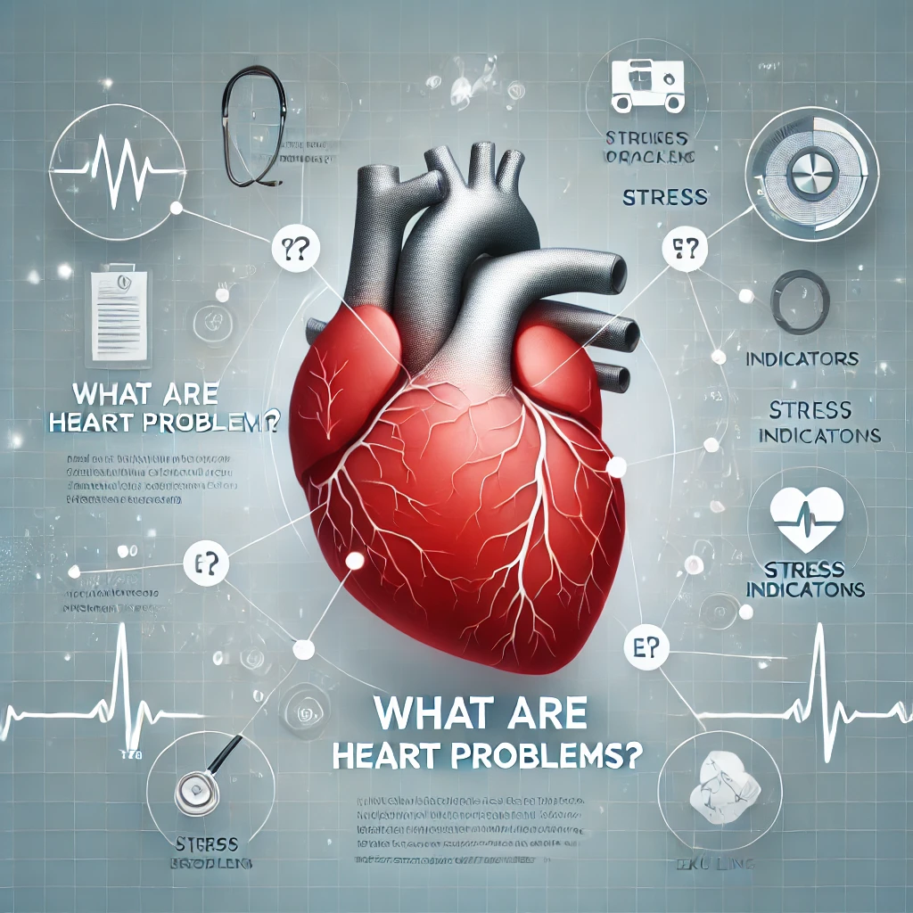
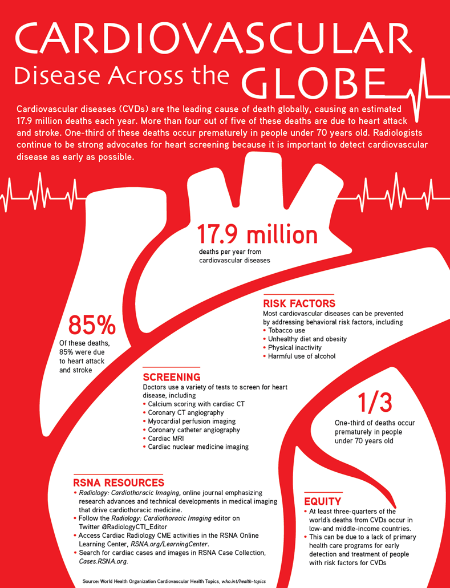

What are Heart Problems?
Heart problems, also known as cardiovascular diseases, are a group of disorders that affect the heart's function. These problems can range from simple issues, such as a mild arrhythmia (irregular heartbeat), to more serious conditions like coronary artery disease, heart failure, and heart attacks. They can result from various factors, including genetic predisposition, unhealthy lifestyle choices such as poor diet, lack of exercise, smoking, and excessive alcohol consumption, as well as medical conditions like high blood pressure, diabetes, and obesity. Early diagnosis and timely treatment are crucial to managing these conditions and improving overall heart health.
Types of Heart Problems
- Coronary Artery Disease (CAD):Caused by a buildup of plaque in the arteries, leading to a reduced blood flow to the heart. This can result in chest pain (angina), shortness of breath, and an increased risk of heart attacks. CAD is the most common type of heart disease and is typically associated with risk factors like high cholesterol, smoking, and a sedentary lifestyle.
- Heart Failure: A condition where the heart is unable to pump blood efficiently to meet the body's needs. This can be due to a weakened heart muscle (systolic heart failure) or impaired ability to relax and fill with blood (diastolic heart failure). Symptoms include fatigue, fluid retention, and shortness of breath.
- Arrhythmia:Irregular heartbeats, either too fast (tachycardia), too slow (bradycardia), or erratic. This can lead to symptoms such as dizziness, palpitations, and fainting. In severe cases, arrhythmias can lead to stroke or sudden cardiac arrest.
- Heart Attack (Myocardial Infarction): A blockage in the blood flow to the heart muscle, causing damage to the heart tissue. This often occurs due to a blood clot that forms at the site of a ruptured plaque in a coronary artery. Symptoms typically include chest pain, shortness of breath, and nausea. Quick medical intervention is critical to minimize damage.
- Valve Disease: When one or more of the heart's valves don’t work properly, leading to inefficient blood flow. This can involve valve stenosis (narrowing of the valve) or valve regurgitation (leakage of the valve). Over time, valve disease can lead to heart enlargement, heart failure, and other complications.
- Aortic Disease:Conditions affecting the aorta, the large blood vessel that carries blood from the heart to the rest of the body. This includes aortic aneurysms (weakening or bulging of the vessel wall) and aortic dissection (a tear in the wall of the aorta), both of which can be life-threatening if not treated promptly.
Symptoms of Heart Problems
The symptoms of heart problems can vary depending on the type and severity of the condition. Common signs include:
- Chest pain or discomfort
- Shortness of breath
- Fatigue
- Irregular heartbeats or palpitations
- Swelling in the legs or abdomen
Prevention and Treatment
Many heart problems can be prevented or managed with lifestyle changes and medical treatment. Here are some key prevention tips:
- Eat a healthy diet: Focus on meals low in saturated fats, trans fats, and sodium, while including plenty of fruits, vegetables, whole grains, lean proteins, and healthy fats like omega-3 fatty acids found in fish and nuts.
- Exercise regularly: Aim for at least 150 minutes of moderate aerobic activity or 75 minutes of vigorous activity per week to strengthen your heart and improve circulation.
- Quit smoking: Avoid both active smoking and exposure to secondhand smoke, as it significantly increases the risk of heart disease.
- Limit alcohol consumption: Keep alcohol intake within recommended limits—moderation is key to protecting heart health.
- Manage stress: Practice relaxation techniques like meditation, yoga, or mindfulness, and seek therapy or support groups if needed. Chronic stress can lead to unhealthy behaviors and strain on the heart.
- Maintain a healthy weight: Achieving and sustaining a healthy weight reduces the strain on your heart and lowers your risk of heart-related complications.
Heart Health Statistics
According to the World Health Organization (WHO), cardiovascular diseases (CVDs) are the leading cause of death globally, accounting for nearly 18 million deaths annually, representing approximately 32% of all global deaths. Of these, more than 75% occur in low- and middle-income countries, where access to preventive measures and timely treatment may be limited. A significant proportion of these deaths are due to heart attacks and strokes, often caused by underlying risk factors like hypertension, high cholesterol, obesity, and smoking. Alarmingly, many individuals remain undiagnosed or untreated until complications arise. However, heart disease is largely preventable. Early detection through regular health screenings, lifestyle changes such as improved diet and increased physical activity, and adherence to prescribed medical interventions can dramatically reduce the burden of CVDs. Public health initiatives focusing on education and awareness also play a critical role in tackling this global health challenge. By addressing modifiable risk factors and ensuring equitable access to healthcare, it is possible to save millions of lives and improve overall cardiovascular health worldwide.
